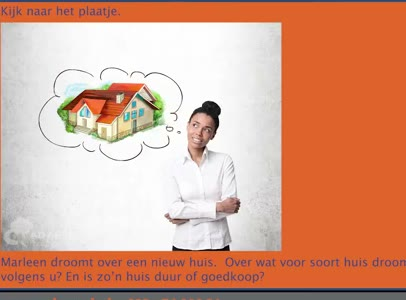
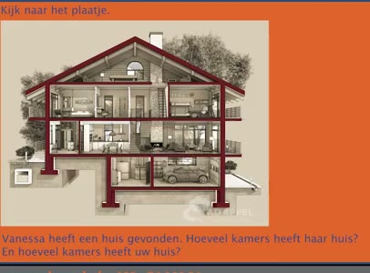
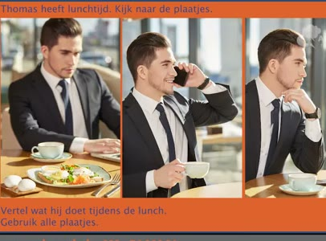
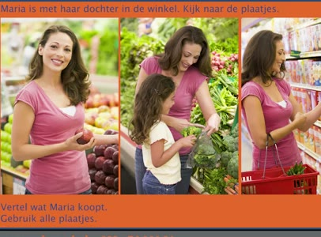

🔊 8 題 🖼️ 5 題 | YouTube ▶
🗣 Het examen is gebaseerd op examenvragen van DUO.
考試是根據 DUO 的考題製作的。
Veel Nederlanders eten om zes uur 's avonds.
許多荷蘭人在晚上六點吃飯。
🗣 Wat vindt u daarvan? Zeg ook hoe laat u zelf meestal eet.
您怎麼看這件事？ 也請說說您自己通常幾點吃飯。
Ik vind dat een goede tijd om te eten. Ik eet ook om zes uur.
我覺得那是一個吃飯的好時間。 我也在六點吃飯。
🗣 Naar welke muziek luistert u graag? Vertel ook hoe vaak u daarnaar luistert.
您喜歡聽什麼音樂？ 也請說明您多久聽一次。
Ik luister elke dag naar popmuziek. Ik houd niet van katten.
我每天都聽流行音樂。 我不喜歡貓。
🗣 Welk dier vindt u niet leuk? En vertel ook waarom.
您不喜歡哪種動物？也請說明原因。
Ik vind katten niet leuk. Katten zijn vies.
我不喜歡貓。貓很髒。
🗣 Ik heb geen rijbewijs. Hebt u een rijbewijs? Vertel ook hoe u dat vindt.
我沒有駕照。您有駕照嗎？ 也請說說您的看法。
Ja, ik heb wel een rijbewijs. Ik vind dat fijn.
是的，我有駕照。 我覺得那很好。
🗣 Wat gaat u morgen doen? Vertel ook hoe laat u dat gaat doen.
您明天打算做什麼？ 也請說明您打算幾點做。
Ik ga morgen om negen uur naar school.
我明天九點去學校。
🗣 Wat is de mooiste plaats waar u geweest bent? Vertel ook waarom u daar was.
您去過的最美的地方是哪裡？ 也請說明您為什麼去那裡。
Amsterdam is de mooiste stad. Ik was daar in een museum.
阿姆斯特丹是最美的城市。我在那裡參觀了一個博物館。
🗣 Welk beroep past beter bij u? Vertel ook of u veel of weinig geld kunt verdienen met dit beroep.
哪種職業比較適合您？ 也請說明您能從這份工作賺很多錢還是比較少。
Ik werk liever in de zorg. Ik kan niet veel geld verdienen in de zorg.
我比較喜歡在照護業工作。 我在照護業不能賺很多錢。

🗣 Kijk naar het plaatje. Marleen droomt over een nieuw huis. Over wat voor soort huis droomt zij volgens u? En is zo'n huis duur of goedkoop?
請看圖片。 馬琳夢想有一棟新房子。 您覺得她夢想的是什麼樣的房子？ 那種房子是貴的還是便宜的？
Zij droomt over een villa. Een villa is duur.
她夢想的是一棟別墅。別墅很貴。

🗣 Kijk naar haar huis. Kijk naar het plaatje. Vanessa heeft een huis gevonden. Hoeveel kamers heeft haar huis? En hoeveel kamers heeft uw huis?
看看她的房子。看看圖片。 凡妮莎找到了一棟房子。她的房子有幾個房間？ 您的房子有幾個房間？
Het huis van Vanessa heeft zes kamers. Mijn huis heeft vijf kamers.
凡妮莎的房子有六個房間。 我的房子有五個房間。
🗣 Kijk naar de plaatjes. Welk beroep past beter bij u? Vertel ook waarom.
請看圖片。 哪種職業比較適合您？也請說明原因。
Leraar past beter bij mij. Ik vind het leuk op school. De een doet administratief werk. De ander werkt in de zorg.
老師比較適合我。我喜歡在學校工作。 一個做行政工作。另一個在照護工作。

🗣 Thomas heeft lunchtijd. Kijk naar de plaatjes. Vertel wat hij doet tijdens de lunch. Gebruik alle plaatjes.
湯瑪斯正在午餐時間。請看圖片。 說說他午餐時做了什麼。請用到所有圖片。
Hij eet een broodje. Hij drinkt koffie. En hij kijkt naar zijn computer. Maria is met haar dochter in de winkel.
他吃了一個麵包。他喝咖啡。 他還看著他的電腦。 瑪麗亞和她的女兒在商店裡。

🗣 Kijk naar de plaatjes. Vertel wat Maria koopt. Gebruik alle plaatjes.
看圖片。 說說瑪麗亞買了什麼，使用所有圖片。
Kijk naar de plaatjes. Zij koopt fruit. Zij koopt groenten. En zij koopt een pak koekjes.
看圖片。她買水果。她買蔬菜。 她還買了一包餅乾。